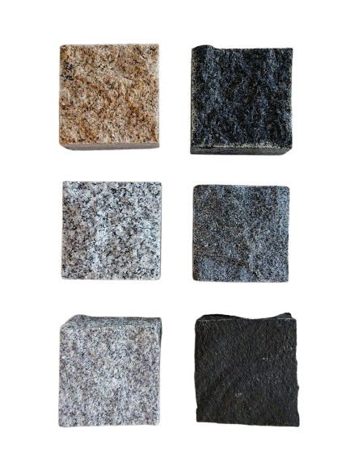
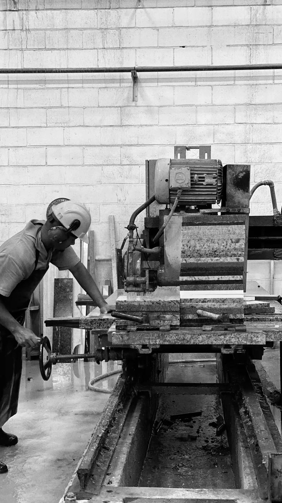
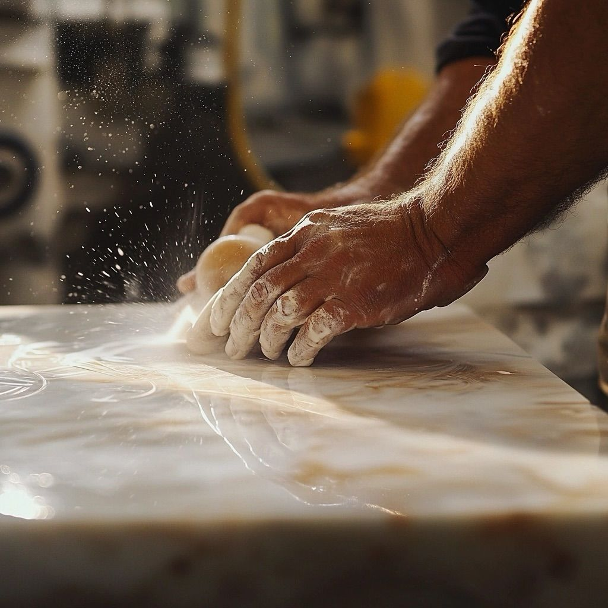

HOME MOSAICOS SARANDÍ
PIEZAS QUE
TRANSFORMAN
ESPACIOS.
Diseñamos mobiliario en mármol y superficies premium para quienes buscan belleza, calidad y carácter.

01MÁRMOL · DISEÑO · CALIDAD

80 AÑOS DE TRAYECTORIA
LA BELLEZA
DE LO ATEMPORAL.
Home Mosaicos Sarandí es la línea de mobiliario en mármol y superficies premium de Fábrica de Mosaicos Sarandí S.A. Combinamos experiencia, materiales y diseño para crear piezas funcionales y elegantes.
Arredondo 2746 · Sarandí · Avellaneda · Buenos Aires.
01
MATERIAL
Superficies seleccionadas para durar.
02
DISEÑO
Proporciones pensadas para cada ambiente.
03
DETALLE
Terminaciones que hacen la diferencia.
COLECCIÓN
NUESTROS
PRODUCTOS.
Una selección de mesas pensadas para convertirse en parte del espacio.

VISITANOS / CONSULTANOS
HABLEMOS
DE TU ESPACIO.
Estamos para asesorarte y ayudarte a elegir la pieza adecuada.
Arredondo 2746 · Sarandíinfo@fabricamosaicos.com.ar11-7844-5258
CONSULTAR POR WHATSAPP